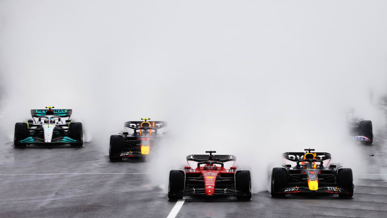
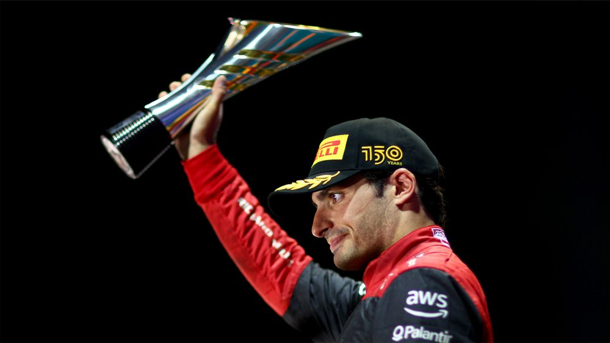
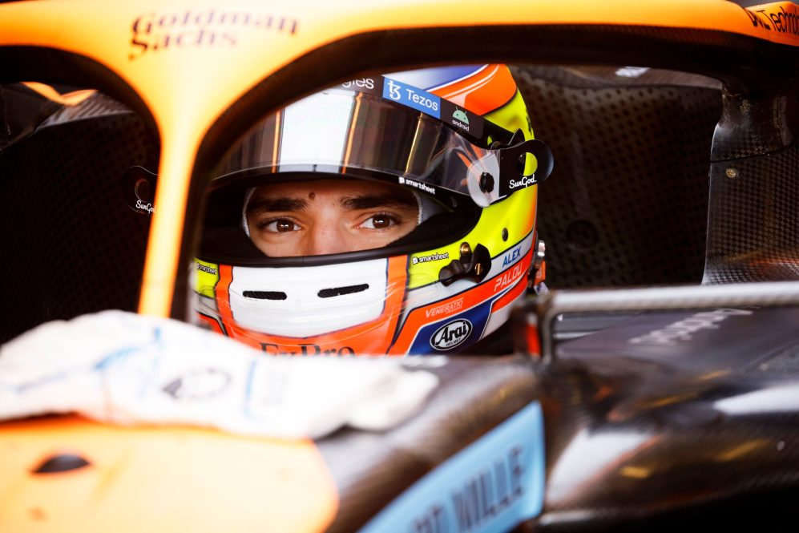
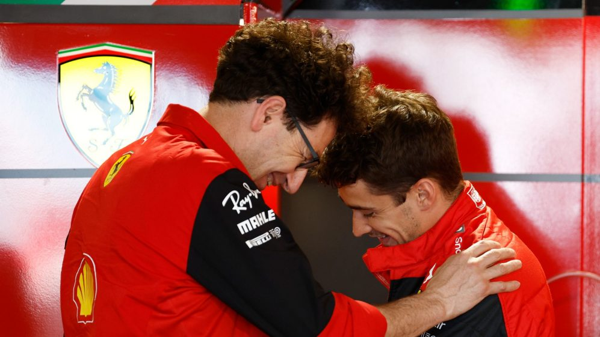
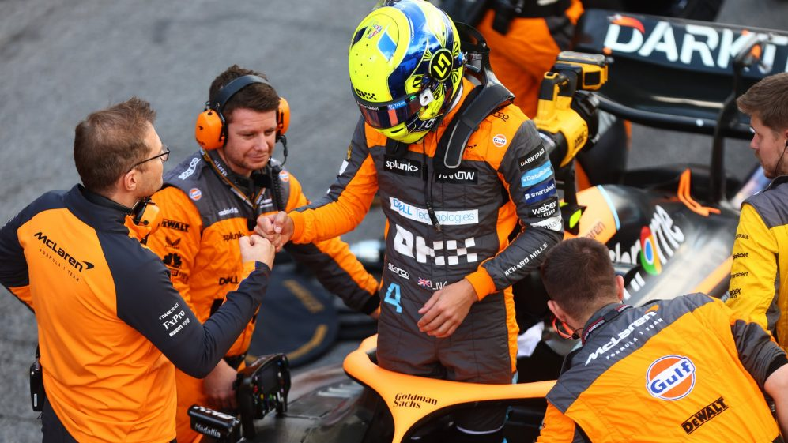

VÍDEO Maestros de las pasadas - los mejores adelantamientos de cada Gran Premio de 2022   NOTICIAS Sainz dice haber aprendido más en un 'desafiante' 2022 que en cualquier año desde su debut  NOTICIAS Mclaren anuncia al campeón de la IndyCar Alex Palou como piloto reserva para 2023  NOTICIAS Leclerc y Sainz agradecen a Binotto tras 'intensos años juntos' en su salida de Ferrari  NOTICIAS Norris dice que Mclaren 'no puede estar satisfecha' con 2022 tras su quinto resultado